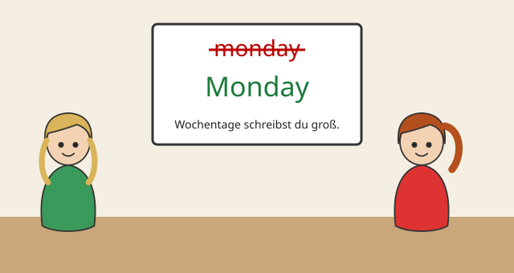

Groß oder klein?
Mit einem KI-Tutor lernen
Ein KI-Tutor erklärt dir diese Seite und hilft dir bei den Aufgaben. Wähl deinen Assistenten:
Mit Claude öffnen Mit ChatGPT öffnen Mit Mistral Vibe öffnen
Du nutzt dein eigenes Konto beim Anbieter. Der Assistent ist kein Angebot von lernapps.net: lernapps liefert nur Inhalte und Aufgaben. Die Wahl gilt für alle Seiten, nur auf diesem Gerät.
Sophies Eintrag im Kalender
Sophie schreibt eine Notiz für ihren Schulkalender. Aus Versehen schreibt sie „monday“ ganz klein. Ellie schüttelt den Kopf. Im Englischen gelten eigene Regeln für große Buchstaben.

Sophie (links) und Ellie (rechts) vor dem Zettel mit dem verbesserten Wochentag.
Quelle: eigene Zeichnung. Lizenz: CC-BY-4.0.Das kannst du danach: Die englischen Regeln der Großschreibung anwenden: I, Namen, Wochentage, Monate, Sprachen und Satzanfang groß, Nomen klein.
Aufgabe
Lösung
My friend is Amir. richtige Antwort
Der Satz beginnt groß, Amir ist ein Name und wird groß geschrieben. Friend ist ein Nomen und bleibt klein.
my friend is Amir.
Ein Satz beginnt immer mit einem Großbuchstaben.
My Friend is Amir.
Friend ist ein Nomen. Im Englischen schreibst du es klein.
Im Englischen schreibst du den Satzanfang und Namen groß, Nomen aber klein.
Wann schreibst du groß?
| Was | Beispiel |
|---|---|
| das Wort I | I'm Sophie. |
| Namen | Amir, Ellie, Millbrook |
| Wochentage | Monday, Friday |
| Monate | May, October |
| Sprachen und Nationalitäten | English |
| der Satzanfang | Today is Monday. |
Merke
Nomen schreibst du im Englischen klein: dog, book, school, friend, auch mitten im Satz. Nur I schreibst du immer groß, auch wenn es mitten im Satz steht. Wochentage, Monate und Sprachen sind im Englischen wie Namen und werden groß geschrieben.
Übung
Aufgabe
Lösung
monday richtige Antwort
Der Wochentag Monday beginnt mit einem großen M.
october richtige Antwort
Der Monat October beginnt mit einem großen O.
sophie richtige Antwort
Der Name Sophie beginnt mit einem großen L.
dog
Dog ist ein Nomen und beginnt mitten im Satz klein.
school
School ist ein Nomen und beginnt mitten im Satz klein.
Namen, Wochentage und Monate schreibst du groß. Nomen schreibst du klein.
Aufgabe
Schreibe den Satz richtig, mit den richtigen Großbuchstaben.
- i am sophie.
- today is tuesday.
- my birthday is in october.
- ellie is english.
Lösung
- I am Sophie. (auch richtig: I'm Sophie.)
- Today is Tuesday.
- My birthday is in October.
- Ellie is English.
Aufgabe
Hör zu und schreibe den Satz mit den richtigen Großbuchstaben.
- KI
- KI
Lösung
- I'm Ellie and today is Friday.
- Amir is English.
Aufgabe
Lösung
Richtige Antwort: Die Aussage stimmt.
Nomen wie dog, book oder school schreibst du im Englischen klein.
Selbst schreiben
Offene Aufgabe
Sophie schreibt zwei Sätze in ihren Kalender. Amir ist ihr Freund. Ihr Geburtstag ist im Oktober. Schreibe die beiden Sätze auf Englisch mit den richtigen Großbuchstaben.
Eine gute Antwort enthält:
Lösung
Amir is my friend. My birthday is in October.
Das steht jetzt in deinem Kalender
Im Schulkalender stehen jetzt Uhrzeiten, Geburtstage und Wochentage, und alles ist richtig geschrieben. Sophie ist bereit für ihr erstes Schuljahr. Im nächsten Kapitel erlebst du es mit.
Fehler gefunden oder eine Idee für diese App?